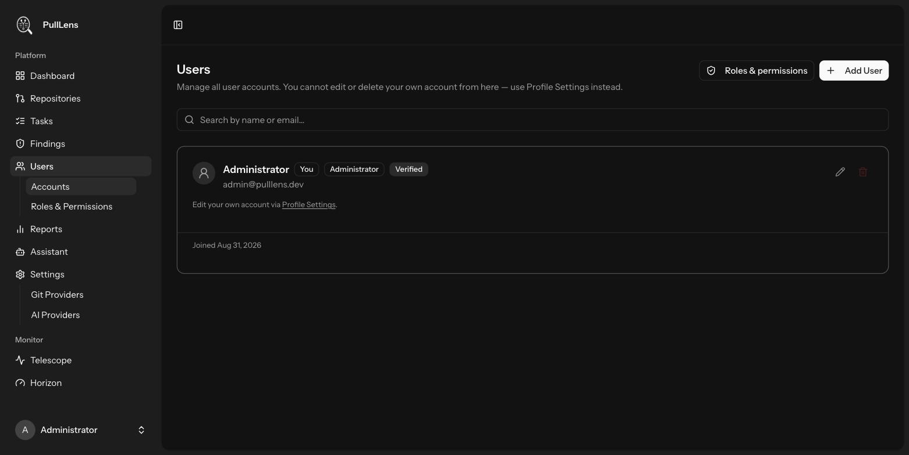
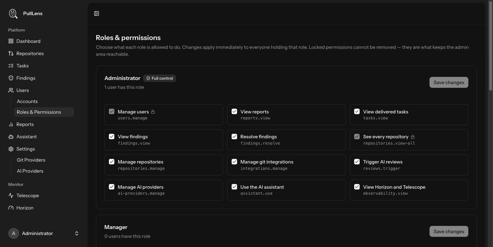

Users, roles and access
Who can sign in, what each role may do, and how to limit someone to specific repositories.
Creating accounts

Go to Users → Accounts and press Add User. Set a name, email, password and role. New accounts are marked verified immediately - an administrator vouched for the address and there is no self-service flow to click a link from.
Use Profile Settings instead. This prevents an administrator locking themselves out or changing their own permissions in place. The last remaining administrator also cannot delete their own account - with registration disabled, that would leave an installation nobody can administer.
The four roles

| Role | Intended for | Can do |
|---|---|---|
| Administrator | Whoever runs the instance | Everything, including users, roles, credentials and observability. |
| Manager | Tech leads | Reports, findings (including resolving), repositories, triggering reviews, the assistant. Not users or credentials. |
| Member | The wider team | Read-only across all repositories: reports, tasks and findings. |
| Contributor | Contractors, external teams | Only the repositories granted to them. No aggregate reports. |
Editing what a role may do
The matrix on Users → Roles & Permissions is editable. Changes apply immediately to everyone holding that role.
| Permission | Grants |
|---|---|
users.manage | Create, edit and delete accounts |
reports.view | Open the reports section |
tasks.view | Open the tasks board |
findings.view | See findings and browse repositories |
findings.resolve | Close findings with a reason |
repositories.view-all | See every repository rather than only granted ones |
repositories.manage | Track and untrack repositories |
integrations.manage | Configure the GitHub App and accounts |
reviews.trigger | Queue reviews manually |
ai-providers.manage | Configure AI providers and keys |
assistant.use | Use the AI assistant |
observability.view | Open Horizon and Telescope |
users.manage and repositories.view-all cannot be removed from the administrator role, and a change leaving no role able to manage users is refused. Registration is disabled, so a lockout would be unrecoverable.
Limiting someone to specific repositories
Any role without repositories.view-all - Contributor by default - sees only what you grant. Editing such a user reveals a per-repository list:
| Level | Allows |
|---|---|
| No access | The repository is invisible to them. |
| View only | Read the repository, its pull requests, findings and tasks. |
| View and manage | Also resolve its findings and trigger reviews, if their role permits those actions. |
Scoping applies everywhere, not just the repository list: dashboard totals, findings, tasks and even the repository and developer dropdowns narrow to the granted set - so the filters cannot disclose that a repository exists. Editing the URL to a repository they were not granted returns 403.
Team performance and commit quality span every repository and cannot be meaningfully narrowed to one person's subset, so those pages require repositories.view-all. Scoped users get the dashboard, repositories, findings and tasks, all correctly narrowed.
Horizon and Telescope
Horizon shows the queue; Telescope shows requests and exceptions. Both expose payloads and credentials in cleartext, so both are restricted to administrators. Telescope is disabled entirely unless TELESCOPE_ENABLED=true.